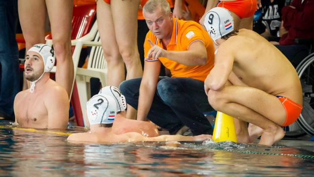

Waterpolomannen winnen ook laatste oefenduel voor OKT
De Nederlandse waterpolomannen hebben ook hun laatste oefenwedstrijd in voorbereiding op het olympisch kwalificatietoernooi (OKT) winnend afgesloten.
In Utrecht werd woensdag Roemenië voor de tweede avond op rij met ruime cijfers verslagen: 18-9 (4-3 6-1 5-2 3-3). Vorige week werd er al twee keer simpel gewonnen van Slowakije
Aanvoerder Roeland Spijker speelde woensdagavond weer mee nadat hij dinsdag nog met een lichte rugblessure aan de kant bleef. Jorn Winkelhorst was met vijf treffers topscorer van de avond.
"We hebben goed gespeeld en deze oefenreeks geeft toch wel behoorlijk wat vertrouwen'', reageerde bondscoach Robin van Galen.
Oranje reist vrijdag naar het OKT in Triëst, waar het is ingedeeld in een poule met Spanje, Italië, Kazachstan, Zuid-Afrika en Duitsland.
De beste vier gaan door naar de belangrijke kwartfinales. Voor de vier halve finalisten ligt er in Italië een ticket klaar voor de Olympische Spelen in Rio de Janeiro.
Volgend nieuws bericht